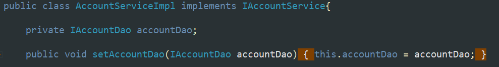
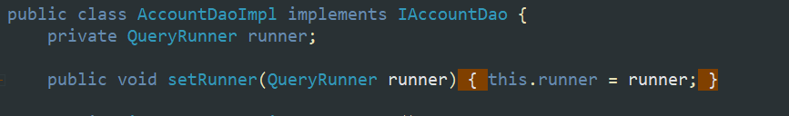
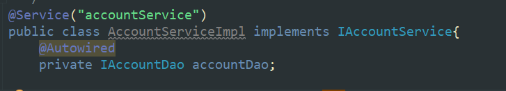
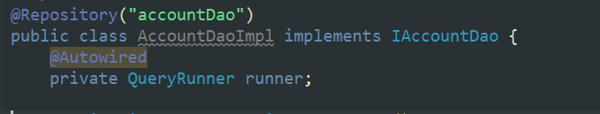
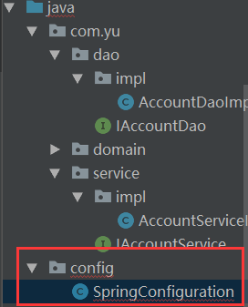
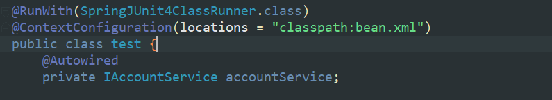
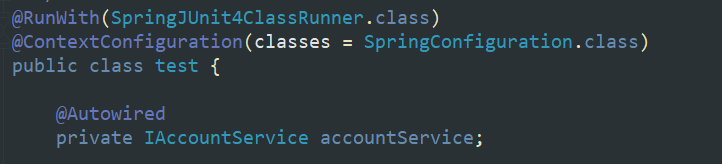

spring中基于注解的IOC和IoC的案例
常用IOC注解按照作用分类
1 | <bean id="accountService" class="com.yu.service.impl.AccountServiceImpl" scope="" init-method="" destroy-method=""> |
- 用于创建对象的：
他们的作用就和在XML配置文件中编写一个<bean>标签实现的功能是一样的 - 用于注入数据的
他们的作用就和在xml配置文件中的<bean>标签写一个<property>表亲啊的作用是一样的 - 用于改变作用范围的
然的作用就和在bean标签中使用scope属性实现的功能是一样的 - 和生命周期相关的
他们的作用就和在bean标签中使用init-method和destroy-method的作用是一样的
用于创建的Component注解
作用：用于把当前类对象存入spring容器中
属性：用于指定bean的id。当我们不写时，他的默认值是当前类名，他的默认值是当前类名，且首字母该小写
- 配置xml约束
1 | <?xml version="1.0" encoding="UTF-8"?> |
- 在业务层实现类头部加上注解
1
2@Component(value = "accountService")
public class AccountServiceImpl implements IAccountService{
由Component衍生的注解
Controller：一般用在表现层
Service：一般用在业务层
Repository：一般用在持久层
以上三个注解他们的作用和属性与Component是一模一样。
他们三个是spring框架为们提供明确的三层使用的注解，使我们的三层对象更加清晰
自动按照类型注入
Autowired：自动按照类型注入。只要容器中有唯一的一个bean对象和要注入的变量类型匹配，就可以注入成功。
如果ioc容器中没有任何bean的类型和要注入的变量类型匹配，就报错。
如果Ioc容器中有多个类型匹配时，先按照类型圈定出来匹配的范围，使用变量名称作为bean的id在全懂出来的对象里继续查找，如果有一样的，
出现位置：可以是变量上，也可以是方法上
细节：在使用注解注入时，set方法就不是必须的了
用于注入数据的注解
Qualifier：在按照类中注入的基础之上再按照名称注入，他在给类成员注入时不能单独使用。但是在给方法参数注入时可以
属性：
value：用于指定注入bean的id
Resouce：
作用：直接按照bean的id注入，他可以独立使用
属性：
name，用于指定bean的id。
以上三个注入都只能注入其他bean类型的数据，而基本类型和String类型无法使用上述注解实现。
另外，集合类型的注入只能通过XML来实现。
Value
作用：用于注入基本类型和String类型的数据
属性：
value：用于指定数据的值。他可以使用spring中SpEL
SpEL的写法：${表达式}
改变作用范围以及和生命周期相关的注解
Scope
作用：用于指定bean的作用范围
属性：
value：指定范围的取值。常用取值：singleton prototype
PreDestroy
作用：用于指定销毁方法
PostConstruct
作用：用于指定初始化方法
测试基于XML的IOC案例
1 | <?xml version="1.0" encoding="UTF-8"?> |


注解IOC案例-把自己编写的类使用注解配置
1 | <?xml version="1.0" encoding="UTF-8"?> |


spring的新注解-Configuration和ComponentScan
Configuration：
作用：指定当前类是一个配置类
细节：
当配置类作为AnnotationConfigApplicationContext对象创建的参数时，该注解可以不写。
ComponentScan：
作用：用于通过注解指定spring在创建容器时要扫描的包
属性：
value：它和basePackages的作用是一样的，都是用于指定创建容器时要扫描的包。
我们使用此注解就等同于在xml中配置了：
1 | <context:component-scan base-package="com.yu"></context:component-scan> |
spring的新注解-Bean
Bean：
作用：用于把当前方法的返回值作为bean对象存入spring的ioc容器中
属性：
name：用于指定bean的id。当不写时，默认值是当前方法的名称。
细节： 当我们使用注解配置方法时，如果方法有参数，spring框架会去容器中查找有没有可用的bean对象
查找的方式和Autowried注解的作用是一样的。
额外创建一个配置类

1 | /** |
AnnotationConfigApplicationContext的使用
1 | @Test |
spring的新注解-Import
Import
作用：用于导入其他的配置类
属性：
value：用于指定其他配置类的字节码。
当我们使用Improt的注解之后，有Import注解的类就父配置类，而导入的都是子配置类
spring的新注解-PropertySource
PropertySource：
作用：用于指定properties文件的额日志
属性：
value：指定文件的名称和路径。
关键字：classpath，表示类路径下
Qualifier注解的另一种用法
可以写在方法参数中，比如当一个项目需要连接多个数据库时，这时需要指定bean对象来连接对应的数据库
spring整合Junit
- 应用程序的入口
- main方法
- junit单元测试中，没有main方法也能执行
- junit集成了一个main方法
- 该方法就会判断当前测试类中哪些方法有 @Test注解
- junit就让有Test注解的方法执行
- junit不会管我们是否采用spring框架
- 在执行测试方法时，junit根本不知道我们是不是使用了spring框架
- 所以也就不会为我们读取配置文件/配置类创建spring核心容器
- 由以上三点可知
- 当测试方法执行时，没有Ioc容器，就算写了Autowired注解，也无法实现注入
1 | /** |
xml

anno
